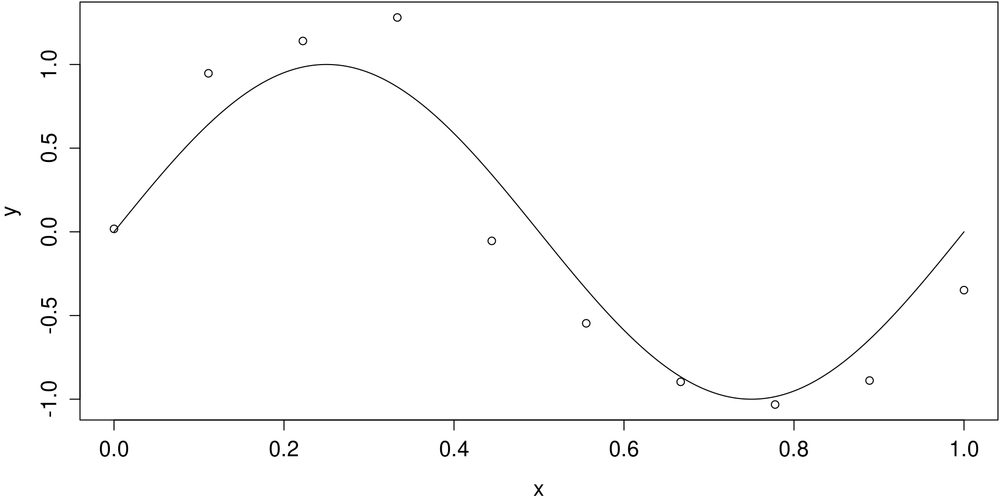

library(tidyverse)
library(boot)
library(brglm)
library(coefplot)
library(mombf)
library(openintro)
library(pROC)Modern Statistical Computing
8. Model comparison
David Rossell
Pompeu Fabra University
Reproducing these lecture notes
Load required R packages
mombf requires sparseMatrixStats. Install it as follows
We also source routines.R, which has auxiliary functions
Typically we’re unsure about what regression model is best. Consider these situations
We add parameters (e.g. variables) to a model. We wanna test if they’re statistically significant by comparing the 2 models
We have \(\geq 2\) models. We seek the best one for forecasting
We have \(\geq 2\) models. We seek the best one for explaining
We discuss methods for each of these situations
Testing 2 nested models
Nested models
Let outcome \(y \in \mathbb{R}^n\), \(X_1\) is \(n \times p_1\), \(X_2\) is \(n \times p_2\)
Model 1 has a regression equation driven by \(X_1 \beta_1\), \(\beta_1 \in \mathbb{R}^{p_1}\)
Model 2 features \(X_1 \beta_1 + X_2 \beta_2\), \(\beta_1 \in \mathbb{R}^{p_1}\), \(\beta_2 \in \mathbb{R}^{p_2}\)
Example. If \(y_i\) is a Gaussian outcome,
Model 1: \(y_i = x_{1i}^T \beta_1 + \epsilon_i\)
Model 2: \(y_i = x_{1i}^T \beta_1 + x_{2i}^T \beta_2 + \epsilon_i\)
Goal. Test the null hypothesis \(H_0: \beta_2=0\)
The standard test for such \(H_0\) is the likelihood ratio test
Likelihood ratio test
Let \(\theta_1=\beta_1\) be the parameters under Model 1, \(\theta_2=(\beta_1,\beta_2)\) those under Model 2
Consider the maximized log-likelihoods \[ \begin{aligned} L_1= \max_{\theta_1} \log p(y \mid \theta_1) \\ L_2= \max_{\theta_2} \log p(y \mid \theta_2) \end{aligned} \]
Def. The likelihood ratio test statistic is \(\mbox{LR}_{21}= 2(L_2 - L_1)\)
Large \(\mbox{LR}_{21}\) indicate that data \(y\) are more likely under Model 2, i.e. evidence against \(H_0:\beta_2=0\)
Likelihood ratio test
Consider 2 nested models and \(\mbox{LR}_{21}\) as defined above, where \(H_0:\beta_2=0\) is true
Result. For Normal linear regression, \[ \mbox{LR}_{21} \sim F_{p_2, n-p_2} \] where \(F_{a,b}\) denotes an F-distribution with degrees of freedom \((a,b)\)
Result. For generalized linear models, under mild technical conditions as \(n \rightarrow \infty\) \[ \mbox{LR}_{21} \stackrel{D}{\longrightarrow} \chi_{p_2}^2 \]
Note: as \(n \rightarrow \infty\), \(F_{p_2,n-p_2} \stackrel{D}{\longrightarrow} \chi_{p_2}^2\)
Likelihood ratio test
These results assume that the model is correct. For example, in linear regression, that data truly follow a Normal linear regression where
\[ y = X_1 \beta_1 + \epsilon \mbox{, where } \epsilon \sim N(0, \sigma^2 I) \]
In R, LRTs are implemented in function anova
Otherwise, one can estimate the distribution of \(\mbox{LR}_{21}\) under \(H_0\) using permutations
Example
(data from Lander’s R for everyone, from NYC Open Data)
\(n=2,626\) condos in different New York boroughs (2011-12)
Outcome: value per square foot (
ValuePerSqFt)10 covariates: neighborhood, year built etc.
# A tibble: 2,626 × 11
Neighborhood Class Units YearBuilt SqFt IncomePerSqFt ExpensePerSqFt
<chr> <chr> <dbl> <dbl> <dbl> <dbl> <dbl>
1 FINANCIAL R9-CONDOMIN… 42 1920 36500 36.5 9.37
2 FINANCIAL R4-CONDOMIN… 78 1985 126420 52.5 13.9
3 FINANCIAL RR-CONDOMIN… 500 NA 554174 31.2 6.39
4 FINANCIAL R4-CONDOMIN… 282 1930 249076 47.3 11.2
5 TRIBECA R4-CONDOMIN… 239 1985 219495 45.6 12.7
6 TRIBECA R4-CONDOMIN… 133 1986 139719 36.7 10.7
7 TRIBECA R4-CONDOMIN… 109 1985 105000 41.6 12.1
8 TRIBECA R4-CONDOMIN… 107 1986 87479 41.6 12.1
9 TRIBECA R4-CONDOMIN… 247 1987 255845 44.0 9.54
10 TRIBECA R4-CONDOMIN… 121 1985 106129 38.8 11.6
# ℹ 2,616 more rows
# ℹ 4 more variables: NetIncome <dbl>, Value <dbl>, ValuePerSqFt <dbl>,
# Boro <chr>Outcome distribution
Transformations

Fit 2 models: additive and with interactions
# A tibble: 7 × 4
Parameter Estimate `Conf. Int.` `P-value`
<chr> <dbl> <chr> <chr>
1 (Intercept) -72.0 (-103.641,-40.392) 1e-05
2 BoroBrooklyn 36.4 (25.518,47.193) <0.00001
3 BoroManhattan 130. (119.805,140.918) <0.00001
4 BoroQueens 33.3 (22.236,44.458) <0.00001
5 BoroStaten Island -7.09 (-26.769,12.585) 0.47979
6 lSqFt 31.2 (22.056,40.244) <0.00001
7 lUnits -16.0 (-24.979,-7.116) 0.00043 # A tibble: 15 × 4
Parameter Estimate `Conf. Int.` `P-value`
<chr> <dbl> <chr> <chr>
1 (Intercept) 27.0 (-232.878,286.935) 0.83843
2 BoroBrooklyn 104. (-163.385,371.185) 0.44599
3 BoroManhattan -64.5 (-326.988,197.944) 0.62982
4 BoroQueens -15.9 (-297.751,265.944) 0.91191
5 BoroStaten Island 85.6 (-494.106,665.33) 0.77216
6 lSqFt 11.4 (-70.55,93.399) 0.78466
7 lUnits -20.1 (-100.036,59.832) 0.62197
8 BoroBrooklyn:lSqFt -28.7 (-112.854,55.48) 0.50398
9 BoroManhattan:lSqFt 43.1 (-39.595,125.75) 0.307
10 BoroQueens:lSqFt 19.2 (-70.599,109.082) 0.67454
11 BoroStaten Island:lSqFt -34.8 (-219.401,149.834) 0.71183
12 BoroBrooklyn:lUnits 39.1 (-43.077,121.211) 0.35112
13 BoroManhattan:lUnits -5.45 (-86.043,75.151) 0.8946
14 BoroQueens:lUnits -26.7 (-115.552,62.187) 0.55609
15 BoroStaten Island:lUnits 43.2 (-144.713,231.178) 0.65199 Single interaction coef. were not significant. Let’s test if the whole vector is 0
Analysis of Variance Table
Model 1: ValuePerSqFt ~ Boro + lSqFt + lUnits
Model 2: ValuePerSqFt ~ Boro + lSqFt + lUnits + Boro:lSqFt + Boro:lUnits
Res.Df RSS Df Sum of Sq F Pr(>F)
1 2619 4974180
2 2611 4755320 8 218860 15.021 < 2.2e-16 ***
---
Signif. codes: 0 '***' 0.001 '**' 0.01 '*' 0.05 '.' 0.1 ' ' 1Same when testing each interaction separately
fit3= lm(ValuePerSqFt ~ Boro + lSqFt + lUnits + Boro:lSqFt, data=housing)
fit4= lm(ValuePerSqFt ~ Boro + lSqFt + lUnits + Boro:lUnits, data=housing)
anova(fit2, fit3)Analysis of Variance Table
Model 1: ValuePerSqFt ~ Boro + lSqFt + lUnits + Boro:lSqFt + Boro:lUnits
Model 2: ValuePerSqFt ~ Boro + lSqFt + lUnits + Boro:lSqFt
Res.Df RSS Df Sum of Sq F Pr(>F)
1 2611 4755320
2 2615 4789946 -4 -34626 4.753 0.0008038 ***
---
Signif. codes: 0 '***' 0.001 '**' 0.01 '*' 0.05 '.' 0.1 ' ' 1Analysis of Variance Table
Model 1: ValuePerSqFt ~ Boro + lSqFt + lUnits + Boro:lSqFt + Boro:lUnits
Model 2: ValuePerSqFt ~ Boro + lSqFt + lUnits + Boro:lUnits
Res.Df RSS Df Sum of Sq F Pr(>F)
1 2611 4755320
2 2615 4832391 -4 -77071 10.579 1.673e-08 ***
---
Signif. codes: 0 '***' 0.001 '**' 0.01 '*' 0.05 '.' 0.1 ' ' 1Coef. for boroughs were not significant. But recall their interpretation! If we have
\[ E(y_i) = \beta_0 + \beta_1 \mbox{manhattan}_i + \beta_2 \mbox{lSqFt}_i + \beta_3 \mbox{manhattan}_i \times \mbox{lSqFt}_i \] then \(\beta_1\) is the difference between Manhattan and the reference borough when \(\mbox{lSqFt}_i=0\). But all condos have \(\mbox{lSqFt}_i > 2.5\)
Re-parameterize the model to facilitate interpretation. Let lSqFt0 be a mean-centered version of lSqFt, so that \(\mbox{lSqFt0}_i = 0 \Rightarrow \mbox{lSqFt}_i=\mbox{mean(lSqFt)}\)
\[ E(y_i) = \beta_0 + \beta_1 \mbox{manhattan}_i + \beta_2 \mbox{lSqFt0}_i + \beta_3 \mbox{manhattan}_i \times \mbox{lSqFt0}_i \]
Now \(\beta_1\) is the Manhattan effect for condos with average log-SqFt
In the mean-centered model boroughs now have a significant effect, as expected
Take-home message
Testing \((\beta_1,\beta_2)=(0,0)\) is not the same as testing \(\beta_1=0\) and \(\beta_2=0\). Even if the latter are both non-significant, the former may be
We must interpret such tests carefully when there’s parameter interactions. Mean-centering the covariates may help a bit
Best model for forecasting
Forecasting is not testing
Hypothesis tests are conservative in nature, e.g. unless fairly sure that \(\beta_1 \neq 0\), set \(\beta_1=0\)
Estimating and forecasting tend to be more liberal, e.g. MLE \(\hat{\beta}_1\) has reasonable predictive properties as \(n\) grows. This said, adding unnecessary parameters to a model can hurt predictions
Over-fitting is a key notion to assess forecasting accuracy of a model/algorithm
Example
Simulate \(n=10\) observations from \[ y_i= \sin(2\pi x) + \epsilon_i \mbox{, where } \epsilon_i \sim N(0,0.2^2) \]
Code
x= seq(0,1, length=10)
y= sin(2*pi*x) + rnorm(10,0,sd=0.2)
xseq= seq(0,1,length=500)
## Create design matrix for up to degree 9
xpol= matrix(NA, nrow= length(x), ncol=10)
xseqpol= matrix(NA, nrow= length(xseq), ncol=10)
for (j in 1:10) {
xpol[,j]= x^(j-1)
xseqpol[,j]= xseq^(j-1)
}
par(mar=c(4,4,.1,.1), cex.lab=1.3, cex.axis=1.3)
plot(x, y)
lines(xseq, sin(2*pi*xseq))Fit polynomials of degree 0, 1, 3 and 9. Which should predict future data better?
Code
fit0= lm(y ~ 1); b0= coef(fit0)
fit1= lm(y ~ -1 + xpol[,1:2]); b1= coef(fit1)
fit3= lm(y ~ -1 + xpol[,1:4]); b3= coef(fit3)
fit9= lm(y ~ -1 + xpol); b9= coef(fit9)
pred1= b1[1] + xseq*b1[2]
pred3= xseqpol[,1:4] %*% matrix(b3, ncol=1)
pred9= xseqpol %*% matrix(b9, ncol=1)
dataobs= tibble(x,y)
df= tibble(truemean=sin(2*pi*xseq), x=xseq, pred0=b0, pred1, pred3, pred9)
ggplot(df, aes(x=x)) +
geom_line(aes(y=truemean)) +
geom_line(aes(y=pred0), col='gray') +
geom_line(aes(y=pred1), col='gray') +
geom_line(aes(y=pred3), col='blue') +
geom_line(aes(y=pred9), col='red') +
geom_point(aes(x=x, y=y), data=dataobs) +
labs(y='True mean')Over-fitting
The prediction accuracy in our training data does not generalize to new data
Adding parameters to a model can only improve MSE in the training data
Instead, assess MSE out-of-sample, i.e. on data that were not used to fit the model
Two popular strategies: train/test split and cross-validation
Train/test split
Use a fraction of the data to fit the model (e.g. 90%), assess MSE on the rest
Example. Prices for 100 new condos not in housing
Fit two models on training data (
housing)Check accuracy on test data (
housingnew)
MSE for each model
mse= c(sqrt(mean((ynew - pred1)^2)), sqrt(mean((ynew - pred2)^2)))
names(mse)= c('model 1','model 2')
round(mse, 3)model 1 model 2
47.051 46.020 % explained variance by each model (out-of-sample \(R^2\) coefficient)
Cross-validation
Issue with training/test split: estimated accuracy depends on what observations were put in each set
Leave-one-out cross-validation. For \(i=1,\ldots,n\)
Exclude \(y_i\), fit model to other data.
Record \(\hat{\beta}^{(i)}\), and \(\hat{y}_i= x_i^T \hat{\beta}^{(i)}\)
Estimate MSE with \(\frac{1}{n} \sum_{i=1}^n (y_i - \hat{y}^{(i)})^2\)
K-fold cross-validation. Same but divide data into \(K\) subsets, leave out one subset at a time
Example
Function cv.glm in package boot implements cross-validation for GLMs
Re-fit the linear model with glm, run cv.glm (by default K=n, i.e. leave-one-out)
We get 2 numbers. The first is the K-fold cross-validated MSE, the second is a bias-adjusted version
Binary outcomes
Cross-validation can be used with any measure of accuracy
For binary outcomes, some popular choices
% of correct classifications
Area under the ROC curve
Log-likelihood loss
Interestingly, the last one can be applied to any probability model
% of miss-classifications
Suppose that we predict \(\hat{y}_i=1\) when \(\hat{P}(y_i=1) > 0.5\)
Function cost_misclass at routines.R implements this loss
function (yobs, ypred, threshold = 0.5)
{
err1 = (ypred > threshold) & (yobs == 0)
err2 = (ypred < threshold) & (yobs == 1)
ans = sum(err1 | err2)/length(yobs)
return(ans)
}cv.glm uses MSE by default, but we can specify any loss function. We’ll use the % of miss-classifications instead
Example. Spam filter
Consider 4 models
Email characteristics: Additive effect of
to_multiple,cc,sent_emailAdd pairwise interactions to 1
Email charac. + words used: add
image,attach,dollar,winnerto 1Add pairwise interactions to 3
fit1= glm(spam ~ to_multiple + cc + sent_email, data=email, family=binomial())
fit2= glm(spam ~ (to_multiple + cc + sent_email)^2, data=email, family=binomial())
fit3= glm(spam ~ to_multiple + cc + sent_email + image + attach + dollar + winner, data=email, family=binomial())
fit4= glm(spam ~ (to_multiple + cc + sent_email + image + attach + dollar + winner)^2, data=email, family=binomial())In-sample accuracy
Let’s compare Models 1 and 4, in-sample
ypred1= predict(fit1, type='response')
mc1= cost_misclass(email$spam, ypred1, threshold=0.5)
round(mc1,3)[1] 0.094ypred4= predict(fit4, type='response')
mc3= cost_misclass(email$spam, ypred4, threshold=0.5)
round(mc3,3)[1] 0.092Actually, we rarely predict an email to be spam
Out-of-sample assessment
Call cv.glm, setting argument cost
fit1cv= cv.glm(email, fit1, cost=cost_misclass, K=10)
fit2cv= cv.glm(email, fit2, cost=cost_misclass, K=10)
fit3cv= cv.glm(email, fit3, cost=cost_misclass, K=10)
fit4cv= cv.glm(email, fit4, cost=cost_misclass, K=10)
loss= c(fit1cv$delta[1], fit2cv$delta[1], fit3cv$delta[1], fit4cv$delta[1])
names(loss)= c('model 1', 'model 2', 'model 3', 'model 4')
round(loss,4)model 1 model 2 model 3 model 4
0.0939 0.0939 0.0898 0.0936 Calibrating the threshold
We predicted spam when \(\hat{P}(y_i=1) > 0.5\). We could consider a lower threshold than 0.5
ROC curve
Suppose we take \(\hat{y}_i\) when \(\hat{\pi}_i= \hat{P}(y_i=1) > t\) for some \(t\)
| \(y_i=0\) | \(y_i=1\) | |
|---|---|---|
| \(\hat{y}_i=0\) | a | b |
| \(\hat{y}_i=1\) | c | d |
- Specificity: among those with \(y_i=0\), what proportion gets \(\hat{y}_i=0\)?
\[ \mbox{Spec}= \frac{a}{a+c} \]
- Sensitivity: among those with \(y_i=1\), what proportion gets \(\hat{y}_i=1\)?
\[ \mbox{Sens}= \frac{d}{b+d} \]
ROC curve
When comparing \(\geq 2\) classifiers, it’s advisable to consider several thresholds \(t\)
Large \(t\) reduces sensitivity, but increases specificity
Small \(t\) reduces specificity, but increases sensitivity
Receiving Operator Characteristic (ROC) curve shows spec vs sens for all \(t\)
set.seed(123)
sel= sample(1:nrow(email), size= round(0.9*nrow(email)), replace=FALSE)
emailtrain= email[sel,] #90% for training data
emailtest= email[-sel,] #10% for test data
fit1train= glm(spam ~ to_multiple + cc + sent_email, data=emailtrain, family=binomial())
fit3train= glm(spam ~ to_multiple + cc + sent_email + image + attach + dollar + winner, data=emailtrain, family=binomial())
pi1test= predict(fit1, type='response', newdata=emailtest)
pi3test= predict(fit3, type='response', newdata=emailtest)
roc1= roc(emailtest$spam, pi1test)
roc3= roc(emailtest$spam, pi3test)ROC curves often compared via Area Under the Curve. Guessing randomly gives AUC=0.5, perfect predictions give AUC=1.
CV log-likelihood
Idea: reward models that give higher probability/density to the out-of-sample data
Let \(Y_i^* \sim \mbox{Bern}(\pi_i)\) for \(i=1,\ldots,n^*\) be out-of-sample data, and \[ \hat{\pi}_i= \frac{1}{1 + e^{-x_i^T \hat{\beta}}} \] where \(\hat{\beta}\) was estimated from the training data
The Bernoulli likelihood is \(P(Y_i^*= a)= \pi_i^{a} (1 - \pi_i)^{1-a}\)
If we observe \(Y_i^*=1\), record the reward \(\log \hat{P}(Y_i^*= 1)= \log \hat{\pi}_i\)
If we observe \(Y_i^*=0\), record \(\log \hat{P}(Y_i^*=0)= \log (1 - \hat{\pi}_i)\)
Function cost_loglik_logistic at routines.R implements the log-likelihood loss
Best model for explaining
Model selection consistency
When comparing many models via LRTs
Hard to control the false discoveries (type I error)
Cannot compare non-nested models
Alternatively, one can use methods that select the true model with probability 1 as \(n \rightarrow \infty\). We call this property model selection consistency
Bayesian information criterion (BIC): popular method that is model selection consistent for GLMs (under mild technical conditions)
Akaike information criterion (AIC): not model selection consistent. Attempts to choose the same model as cross-validation
Cross-validation is not model selection consistent either
Information criteria
Def. Consider a model \(M_k\) with log-likelihood \(L_k(\theta_k)\) and parameters \(\theta_k\) \[ \begin{aligned} &\mbox{BIC}_k= - 2 L_k(\hat{\theta}_k) + \log(n) p_k \\ &\mbox{AIC}_k= - 2 L_k(\hat{\theta}_k) + 2 p_k \end{aligned} \] where \(p_k=\mbox{dim}(\theta_k)\) is the number of parameters in \(M_k\) and \(n\) the sample size
Model selection strategy: evaluate BIC for all candidate models \(M_1,\ldots,M_K\), choose the one with lowest BIC (analogously for AIC)
If this sounds weird, recall that in linear regression \(-2 L_k(\hat{\theta}_k)\) is given by the sum of squared residuals \[ \sum_{i=1}^n (y_i - x_i^T \hat{\beta}_k)^2 \]
Example. Email data
Functions BIC and AIC extract the BIC/AIC from a GLM
- Both choose Model 3, as before
- Faster computations (no need to cross-validate)
Warning: AIC fails to approximate cross-validation, unless \(n\) is quite large and the model assumptions hold
fit1= glm(spam ~ to_multiple + cc + sent_email, data=email, family=binomial())
fit2= glm(spam ~ (to_multiple + cc + sent_email)^2, data=email, family=binomial())
fit3= glm(spam ~ to_multiple + cc + sent_email + image + attach + dollar + winner, data=email, family=binomial())
fit4= glm(spam ~ (to_multiple + cc + sent_email + image + attach + dollar + winner)^2, data=email, family=binomial())
bic= c(BIC(fit1), BIC(fit2), BIC(fit3), BIC(fit4))
aic= c(AIC(fit1), AIC(fit2), AIC(fit3), AIC(fit4))
models= c('model 1','model 2','model 3','model 4')
data.frame(models, bic, aic) models bic aic
1 model 1 2139.092 2113.995
2 model 2 2158.754 2114.835
3 model 3 2047.379 1997.187
4 model 4 2189.741 2007.793Searching over models
bestBIC in package mombf searches all possible models (if one can enumerate them)
email= transform(email, spam= as.numeric(as.character(spam))) #convert outcome to numeric 0/1 values
fitall= bestBIC(spam ~ to_multiple+cc+sent_email+image+attach+dollar+winner, data=email, family="binomial")Enumerating models...
Computing posterior probabilities
0%
9%
19%
29%
39%
48%
58%
68%
78%
87%
97%
Doneicfit object
Model with best BIC : (Intercept) to_multiple1 sent_email1 image attach dollar winneryes
Use summary(), coef() and predict() to get inference for the top model
Use coef(object$msfit) and predict(object$msfit) to get BMA estimates and predictionsGet inference for the top model using summary, coef, confint and predict (as usual)
Call:
glm(formula = f, family = family2glm(ms$family), data = data)
Coefficients:
Estimate Std. Error z value Pr(>|z|)
`(Intercept)` -1.74116 0.06454 -26.979 < 2e-16 ***
to_multiple1 -2.29408 0.31551 -7.271 3.57e-13 ***
sent_email1 -28.14719 285.54925 -0.099 0.921
image -3.02753 0.57812 -5.237 1.63e-07 ***
attach 1.12546 0.13816 8.146 3.77e-16 ***
dollar -0.09183 0.02205 -4.164 3.13e-05 ***
winneryes 1.72215 0.31251 5.511 3.57e-08 ***
---
Signif. codes: 0 '***' 0.001 '**' 0.01 '*' 0.05 '.' 0.1 ' ' 1
(Dispersion parameter for binomial family taken to be 1)
Null deviance: 5435.7 on 3921 degrees of freedom
Residual deviance: 1981.9 on 3914 degrees of freedom
AIC: 1995.9
Number of Fisher Scoring iterations: 18 2.5 % 97.5 %
`(Intercept)` -1.74115969 -1.8693948 -1.61632887
to_multiple1 -2.29408225 -2.9668638 -1.72085841
sent_email1 -28.14718679 -152.4916190 -229.54599239
image -3.02752517 -4.5887763 -2.05731179
attach 1.12545854 0.8574937 1.40085631
dollar -0.09182653 -0.1394603 -0.05258241
winneryes 1.72214658 1.1002982 2.33300066The standard errors for sent_email looked weird. Why?
The estimated spam probability when sent_email==1 is 0.
The MLE doesn’t exist (it occurs at \(\hat{\beta}_3=-\infty\)), breaking the technical conditions required by asymptotic theory
Bootstrap won’t help either. Why?
Possible fix: function brglm from package brglm2 uses a variation of MLE, penalized likelihood, that’s more resilient to these issues
Too many models
When \(p\) is large we cannot enumerate all \(2^p\) models. Classical strategies:
Stepwise forward: start with no variables, add 1 at a time
Stepwise backward: start with all variables, drop 1 at a time
These heuristics often work reasonably, but they can get stuck in local modes
We discuss Markov Chain Monte Carlo (MCMC) methods for model search
MCMC model search
MCMC: ample family of algorithms to sample from any probability distribution
- Trick 1: define a probability distribution over models
\[ \pi(M_k) = \frac{e^{-BIC_k/2}}{\sum_{j} e^{-BIC_j/2}} \]
Small BIC\(_k \Rightarrow\) large \(\pi(M_k)\). Clearly \(\pi(M_k) \in [0,1]\) and \(\sum_{k=1}^K \pi(M_k)=1\)
The /2 comes from a Bayesian interpretation of the BIC, but one could use other values
- Trick 2: sample from \(\pi(M_k)\). The higher \(\pi(M_k)\), the higher the probability of sampling this model
Finally, choose model with best \(\pi(M_k)\) among the sampled ones
MCMC
Goal: obtain \(B\) samples from a distribution \(\pi(z_1,\ldots,z_p)\)
MCMC algorithms give dependent samples from \(\pi\)
Define a Markov Chain with stationary distribution \(\pi\)
Gibbs sampler. A simple type of MCMC
Denote a model by \(\gamma=(\gamma_1,\ldots,\gamma_p)\), where \[\gamma_j= \begin{cases} 1 \mbox{, if } \beta_j \neq 0 \\ 0 \mbox{, if } \beta_j=0 \end{cases}\]
- Initialize \(\gamma_1^{(0)},\ldots,\gamma_p^{(0)}\)
- For \(b=1,\ldots,B\), \(j=1,\ldots,p\), update \(\gamma_j^{(b)}\) from its conditional distrib. given the current values of the other \(\gamma_i\)’s
Example
With \(p=2\) continuous covariates we have
| Model | \(\gamma_1\) | \(\gamma_2\) |
|---|---|---|
| No covariates | 0 | 0 |
| Only \(x_1\) | 1 | 0 |
| Only \(x_2\) | 0 | 1 |
| \(x_1\) and \(x_2\) | 1 | 1 |
Initialize \(\gamma_1^{(0)}=0, \gamma_2^{(0)}=0\) (for example)
Set \(\gamma_j=1\) with probability
\[ \frac{e^{-\mbox{BIC}_1/2}}{e^{-\mbox{BIC}_0/2} + e^{-\mbox{BIC}_1/2}} \] where BIC\(_1\) is the BIC for the model with \(\gamma_j=1\), BIC\(_0\) that for \(\gamma_j=0\)
Example
Simulate \(n=1000\) observations with \(p=50\) covariates
\(x_i \sim N(0, \Sigma)\) with \(\sigma_{jj}=1\), \(\sigma_{jk}=0.5\)
\(\beta=(0,\ldots,0,0.5,0.5,1,1)\), \(\sigma^2=1\)
bestBIC uses MCMC to explore the models when \(p\) is large
Greedy searching posterior mode... Done.
Running Gibbs sampler
0%
10%
20%
30%
40%
50%
60%
70%
80%
90%
100%
Doneicfit object
Model with best BIC : x[,47] x[,48] x[,49] x[,50]
Use summary(), coef() and predict() to get inference for the top model
Use coef(object$msfit) and predict(object$msfit) to get BMA estimates and predictionsThe selected model is the correct one, the estimates are very precise
Model with best BIC
List of visited models and corresponding BIC
# A tibble: 2,733 × 2
modelid bic
<chr> <dbl>
1 47,48,49,50 2862.
2 40,47,48,49,50 2865.
3 27,47,48,49,50 2865.
4 16,47,48,49,50 2866.
5 36,47,48,49,50 2866.
6 46,47,48,49,50 2866.
7 15,47,48,49,50 2866.
8 6,47,48,49,50 2866.
9 19,47,48,49,50 2866.
10 35,47,48,49,50 2867.
# ℹ 2,723 more rowsExercise 1 (to turn in)
Spam data. Consider models fit1 and fit3
Test the null hypothesis \(H_0\) that all parameters added by
fit3are truly 0.Classify as spam whenever \(\hat{\pi}_i > 0.15\). Use
cv.glmto estimate the proportion of miss-classifications out-of-sample byfit1andfit3. Which model is best? Hint: re-definecost_misclassto use a threshold of 0.15Use
cv.glmto comparefit1andfit3according to the log-likelihood loss. Which is best? Hint: pass ourcost_loglik_logistictocv.glm
Exercise 2 (to turn in)
Simulate logistic regression data with \(n=200\), \(p=10\), where truly only covariates 1-5 have an effect. Covariates are Gaussian, zero mean, pairwise correlations rho
Simulate data
Fit a logistic regression for
data$yvs.data$x. What P-values are <0.05?Use
bestBICto get the model with best BIC. What covariates are selected?
Exercise 2 extension (not to turn in)
The code below repeats the simulation 100 times. selected[i,j] is TRUE if covariate j in simulation i
In what % of the simulations was each variable selected?
Repeat the exercise, now with \(n=500\). In what % of the simulations was each variable selected?